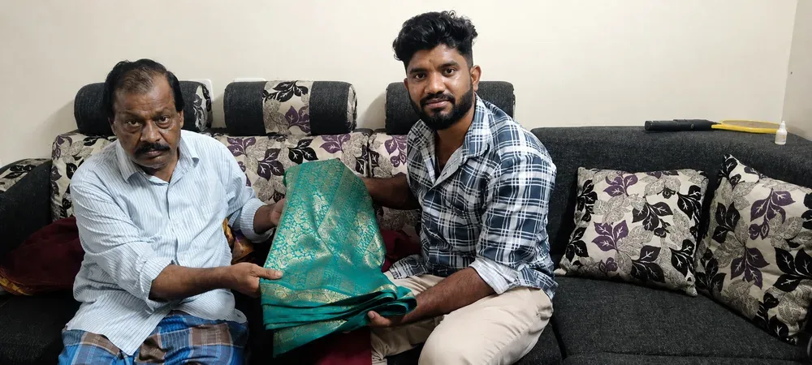
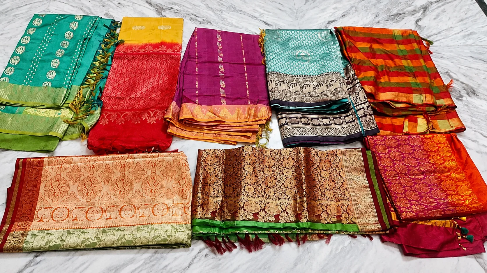

Second Hand Saree Buyers in Chennai
Are you searching on Google for Second hand saree buyers in Chennai? Yes we heard you! You have arrived at the right place to sell your old & used sarees at your cupboard for a big price. We accept all type of sarees including cotton sarees, pattu sarees, vayil sarees, polyster sarees and poonam sarees etc. Make an call and sell your sarees for the best price in Chennai with free door pickup. Hurry up soon!
Old Saree Buyers in Chennai
Contact us
Just give us a call at +91 8608008343 or fill out the inquiry form below to get a callback. We are available 24*7.
Share Location
After contacting us provide your location through a phone call or share your location through WhatsApp.
Free Door Pickup
We will come and collect your old zari sarees at your doorstep within 12 Hours of calling. The pickup is 100% Free.
Get Cash in Hand
We always give spot cash for your dresses right in your hands itself, We assure you the best price for your used sarees.
Request a Call Back
Fill in your details and our team will call you shortly.
We've received your request and will call you shortly.
Do not be concerned about the information you provide; it is just used for communication between us. Your sarees are valued by us, along with the sentiment and expense involved. For second hand sarees, we offer the best pricing in Chennai. Our team makes sure that your personal information is kept private and won't call you frequently.

Second Hand Saree Buyers in Chennai
Buying sarees can be very special because it might be a gift from your loving husband or the first dress from your first salary or many other special reasons. So selling them should be with the best person right? OM Sairam Pattu Center is the best old saree buyers in Chennai servicing more than 45 years from various parts of Tamilnadu. We do accept used sarees in bulk and also accept sarees from temples, ashramas and hostels too.

Sell Used Sarees & get the best price for it
In addition to cash, we can also provide you with brand-new silver and plastic kitchenware worth the same amount of used sarees you offered in return. Why keep waiting? Get in touch with us to sell your second hand sarees. This could be a better opportunity to trade in your used and old sarees if you intend to purchase some useful items for your lovely home. The greatest place to buy second-hand sarees in Chennai is OM Sairam Pattu Center.
Reviews - "Best old saree buyers near me"
"I finally found Mr. Sudhan on the internet after much searching. I first called him and informed him about the sarees that were destroyed at home by heavy rain leakage. Realizing the seriousness, he agreed to purchase the extremely expensive sarees. He picked up the torn used sarees after he reached my house within an hour. Now without any hesitation, I can say that he is one of Chennai's top buyers of used sarees."
"I was searching for best second hand saree buyers in the T Nagar area. When I contacted OM Sairam Buyers, the man approached politely and quickly picked up my sarees. In return for some old zari sarees, I purchased some silver pathirams, and they were excellent silver pieces. They deserve a special thank you for their quick response and service. The pricing offered for the sarees are also excellent."
"I was in charge of the old ashram in Mylapore, There were many old people and ladies in the ashram. They were having many old clothes in their wardrobe and were trying to dispose of them in the garbage. So I planned to help them buy by selling them at a good price and returning them with new clothes. I contacted this buyer and understanding the situation they gave a very good price and accepted all sarees."